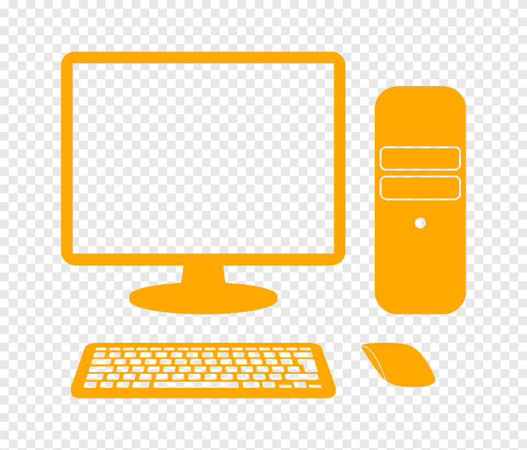

<ion-header>
  <ion-toolbar color="primary">
    <ion-buttons slot="start">
      <ion-menu-button></ion-menu-button>
    </ion-buttons>
    <ion-title>LABORATÓRIOS</ion-title>
  </ion-toolbar>
</ion-header>


<ion-content fullscreen>
  <!-- <ion-searchbar placeholder="Procurar"></ion-searchbar> -->
  
  <ion-list lines="full">
    <ion-item button *ngFor="let s of sectors">
      <ion-avatar slot="start">
        
      </ion-avatar>
      <ion-label>
        <h2>{{s.nome}}</h2>
      </ion-label>
    </ion-item>
  </ion-list>
</ion-content>
